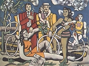

Picasso: Avignonské sleèny

Picasso: Tøi muzikanti
Braque: Mu s kytarou
|
KUBISMUS
První kubistickı obraz Avignonské sleèny namaloval Pablo Picasso v roce 1907, kontroverzní námìt (prostitutky) doprovázela nezvyklá kompozice a negerské masky na oblièejích en. Slovo kubismus bylo pùvodnì hanlivım oznaèením pro malíøe, kteøí prı malovali pouhé krychle (lat. cubus). Ve skuteènosti kubisté navazovali na francouzského malíøe Paula Cézanna, kterı chtìl pøevést skuteènost na základní geometrické tvary. Francouz Georges Braque [or brak] nebo Španìlé Pablo Picasso [pikaso] a Juan Gris navíc zobrazovali obejkty jakoby z rùznıch úhlù zároveò. Tuto poèáteèní fázi nazıváme analytickı kubismus. V syntetickém kubismu pøevládla nad zobrazovanou skuteèností geometrizující kompozice obrazu. Nìkdy malíøi nechávali zcela na fantazii diváka, co je na plátnì namalováno. Kubisté se také vìnovali kolái, asamblái nebo sochaøství. Kubistickou etapou prošli napø. francouzští malíøi Robert Delaunay [delone] nebo Fernand Léger [lee].
V literatuøe bıvají za kubisty povaováni francouzští básníci Guillaume Apollinaire, Max Jacob [akob], Pierre Reverdy, Blaise Cendrars [bléz sandrár] nebo Jean Cocteau [an kokto].
V Èechách se ke kubismu hlásila Skupina vıtvarnıch umìlcù, která pùsobila v letech 1911 a 1914 a vydávala avantgardní èasopis Umìleckı mìsíèník. Patøili k ní malíøi Josef Èapek, Václav Špála, Emil Filla nebo Bohumil Kubišta, sochaø Otto Gutfreund, architekt Jan Goèár, teoretik a sbìratel umìní Vincenc Kramáø a spisovatelé Karel Èapek nebo František Langer. Nìkteøí z tìchto umìlcù spoleènì vystoupili v roèence Almanach na rok 1914. Ojedinìlım fenoménem byla èeská kubistická architektura.

Picasso: Guernica
|
Delaunay: Martovo pole – Eiffelova vì v èervené

Léger: Dvì eny s kvìtinou

Gris: Šachovnice
|
Guillaume Apollinaire
(1880-1918)
Nejvıznamnìjší avantgardní spisovatel Guillaume Apollinaire [gijóm apolinér], vlastním jménem Kostrowitzky, se narodil v Øímì jako nemanelské dítì. Jeho matka vedla nevázanı ivot, èasto se stìhovala, a nakonec zakotvila v Paøíi. Také Apollinaire hodnì cestoval (navštívil i Èechy). Vymyslel názvy pro surrealismus a orfismus. Nejèastìji bıvá oznaèován jako kubofuturista. Po vypuknutí 1. sv. války se dobrovolnì pøihlásil jako voják na frontu. Byl vánì zranìn a o dva roky pozdìji zemøel na španìlskou chøipku. Apollinaire napsal básnické sbírky Alkoholy (Pásmo) a Kaligramy,
prózy Zahnívající kouzelník, Kacíø a spol. (Praskı chodec) nebo Ubrousek básníkù, román Zavradìnı básník a drama Prsy Tiresiovy. Zajímal se rovnì o vıtvarné umìní. Pøátelil se s Picassem a vydal knihy statí Kubistiètí malíøi nebo Futuristická antitradice.
Zranìnı Apollinaire s pøáteli
|
Guillaume Apollinaire: Alkoholy
Apollinaire zaèal pøi psaní pouívat novou metodu, která byla zaloena na asociativním øetìzení nesourodıch témat a pøedstav. Jednotícím prvkem tak zùstal pouze básnickı subjekt. Tento tvùrèí postup byl základem polytematické básnì Pásmo, která vyšla v jeho sbírce Alkoholy (1913).
Apollinairovo Pásmo velmi ovlivnilo èeskou avantgardní poezii. U roku 1919 ho pøeloil Karel Èapek. Apollinairovu polytematickou asociativní metodu vyuil Wolker v básni Svatı Kopeèek, Nezval ve skladbách Podivuhodnı kouzelník nebo Edison, Biebl v Novém Ikarovi a øada dalších spisovatelù.
Guillaume Apollinaire: Kaligramy
Básnická sbírka Kaligramy obsahuje dvacet básní-obrazù. Apollinaire v nich vyuil svého vıtvarného nadání a z vlastních veršù vytvoøil „kresby“. Vıslednı obraz vdy vychází z námìtu básnì – Eiffelova vì, vodotrysk, kravata, hodiny, déš atd. Kniha vyšla roku 1918 a obsahuje i skladby psané tradièní formou (Okna, Pondìlí v Kristıninì ulici). Tématem nìkterıch z nich jsou Apollinairovy záitky z války.

|
Proè Apollinaire nepouíval interpunkèní znaménka?
Proè všechny verše Pásma zaèínají velkım písmenem?
Kterım tématùm se vìnuje v první sloce Pásma?
Zmiòuje v Pásmu i Èechy? V jaké souvislosti?
Co tì na Apollinairovì básni zaujalo nejvíce?
Èím se Pásmo odlišuje od tvorby moderních spisovatelù – dekadentù, symbolistù, impresionistù nebo civilistù a vitalistù?

Apollinaire: Kaligramy
Vysvìtli vıznam slov kaligram a kaligrafie.
Zkus vytvoøit vlastní kaligram.
|
Karel Èapek (1890-1938)

Èapek se narodil v Malıch Svatoòovicích a zemøel v Praze. Vystudoval filozofii, estetiku, dìjiny vıtvarného umìní a filologii. Byl stoupencem pragmatismu a zastáncem demokratického zøízení – Hovory s TGM. V jeho domì se scházeli tzv. páteèníci. Pøestoe se zajímal o avantgardní umìní – Francouzská poezie nové doby, nesouhlasil s levicovou ideologií – Proè nejsem komunistou, ke které se mladí tvùrci hlásili. Pracoval jako redaktor v Lidovıch novinách, byl dramaturgem Vinohradského divadla a zaloil èeskı PEN-klub. Øadu dìl napsal s bratrem Josefem – Krakonošova zahrada, Záøivé hlubiny, Ze ivota hmyzu. Sám psal povídky – Boí muka, Trapné povídky, Povídky z jedné a druhé kapsy, fejetony – Anglické listy, Zahradníkùv rok, úvahy – Marsyas èili Na okraj literatury, O vìcech obecnıch èili Zoon politikon, romány – Továrna na Absolutno, Krakatit, Hordubal, Povìtroò, Obyèejnı ivot, První parta, Válka s mloky, divadelní hry – Loupeník, R.U.R., Vìc Makropulos, Matka i pohádky – Devatero pohádek, Dášeòka èili ivot štìnìte.
Gutfreund: Kubistické poprsí
|
Karel Èapek: Boí muka
Èapkovu sbírku Boí muka otevírá povídka Šlépìj, která se v pøepracované verzi a pod obmìnìnım názvem Šlépìje objevila v knize Povídky z jedné kapsy. V obou povídkách vyuil Èapek kubistickı zpùsob nazírání na nìjakı objekt. Tím jsou stopy ve snìhu, které náhle konèí. Lidé, kteøí si této záhady všimnou, se marnì pokoušejí najít nìjaké racionální vysvìtlení. Kadı se na problém dívá z jiného úhlu a nabízí odlišné øešení. ádné z nich ale není definitivní.
Karel Èapek: ivot a dílo skladatele Foltına
Poslední Èapkùv román ivot a dílo skladatele Foltına zùstal nedokonèen. Je zajímavı pøedevším metodou vyprávìní, kdy je hlavní postava – netalentovanı umìlec Foltın posedlı utkvìlou pøedstavou napsat operu – nazírána z pohledu svıch pøátel, manelky a dalších lidí. Èapek z tìchto promluv sloil mozaiku individuálních pohledù na jednoho èlovìka. Foltın se kadému jeví trochu jinak, ale ètenáø si mùe udìlat plastickı obrázek o jeho skuteèné povaze.
Špála: Na Berounce u Srbska
|

Filla: Zlaté rybièky u okna
Srovnej Èapkovy povídky Šlépìj a Šlépìje.
Jak bys vysvìtlil/a záhadu náhle konèících stop ty?
Jakı je podle tebe Foltın?
Mìl se vzdát svého snu sloit operu? Proè?
Jakı/á chceš bıt?
Jak pùsobíš na své okolí?
Jsou lidé, kteøí si o tobì mohou myslet pravı opak? Jak k takové situaci došlo? Dá se to napravit? Jak?
Dáš na první dojem?
Co je podle tebe nejdùleitìjší pøi komunikaci s ostatními lidmi?
Jaké chování oèekáváš od svého ivotního partnera?
Souhlasíš s názorem „co nechceš, aby ostatní èinili tobì, neèiò ty jim“? Napiš na toto téma krátkou povídku.
Èapek vyuil kubistickou metodu také v tzv. noetické trilogii, kterou tvoøí romány Hordubal, Povìtroò a Obyèejnı ivot. Co spojuje tyto knihy?
Kubišta: Zátiší s lebkou
|
Internetové stránky
Apollinaire
Apollinaire
Picasso, malíø
Picasso, malíø
Picasso, malíø
Picasso, malíø
Gris, malíø
Delaunay, malíø
Karel Èapek
Exkurze
Muzeum kubismu, Dùm U Èerné Matky Boí, Praha
Kubistická Praha
Picassovo muzeum, Barcelona
Picassovo muzeum, Paøí
Picassovo muzeum, Malaga
Picassovo muzeum, Madrid

Léger: Chvíle oddechu
|
Doporuèená èetba
Apollinaire, Guillaume: Alkoholy, pøel. P.Kopta, Odeon, Praha 1996
Apollinaire, G.: Alkoholy, pøel. Z.Kalista, Vilém Šmidt, Praha 1946
Apollinaire, G.: Alkoholy ivota, Èeskoslovenskı spisovatel, Praha 1965
Apollinaire, G.: Básnì – obrazy, pøel. J.Konùpek, SNKLU, Praha 1965
Apollinaire, G.: Hudebník ze Saint-Merry, Èeskoslovenskı spisovatel, Praha 1981
Antonín Procházka (1882-1945), Tigris, Praha 2002
Èapek, Karel: Boí muka, Trapné povídky, Èeskoslovenskı spisovatel, Praha 1981
Èapek, K.: Francouzská poezie a jiné pøeklady, SNKLHU, Praha 1957
Èapek, K.: Hordubal, Povìtroò, Obyèejnı ivot, Èeskoslovenskı spisovatel, Praha 1981
Èapek, K.: První parta, ivot a dílo skladatele Foltına, Èeskoslovenskı spisovatel, Praha 1981
Dílo Jaroslava Seiferta 2, Akropolis, Praha 2002 (Apollinaire)
Hartwigová, Julia: Apollinaire, pøel. V.Zapletalová, Odeon, Praha 1966
Hlušièka, Jiøí: Emil Filla 1882-1953, Brno 2003
Kramáø, Vincenc: O obrazech a galeriích, Odeon, Praha 1983
Nešlehová, Mahulena: Bohumil Kubišta, Odeon, Praha 1984
Lahoda, Vojtìch: Èeskı kubismus, Brána, Praha 1996 (katalog k vıstavì)
Lamaè, Miroslav: Georges Braque, Odeon, Praha 1983
Penrose, Roland: Picasso, Jeho ivot a dílo, pøel. L.Kováøová, Odeon, Praha 1971
Petrová, Eva: Picasso v Èeskoslovensku, Odeon, Praha 1981
Vallentinová, Antonia: Picasso, pøel. O.Kuba, SNKLU, Praha 1965
Warncke, Carsten-Peter: Pablo Picasso, 1881-1973, pøel. J.Burkertová, Taschen
|
Vypracuj písemnı referát o nìkteré z uvedenıch knih.

Picasso: Marie-Tereza Walterová

Kubistickı dùm na praském Vyšehradì v Neklanovì ulici od Josefa Chocholy
|
|